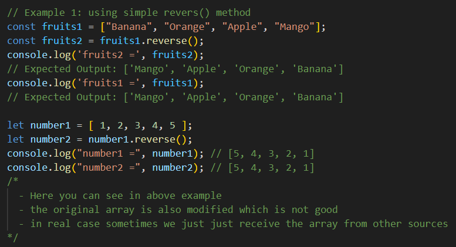
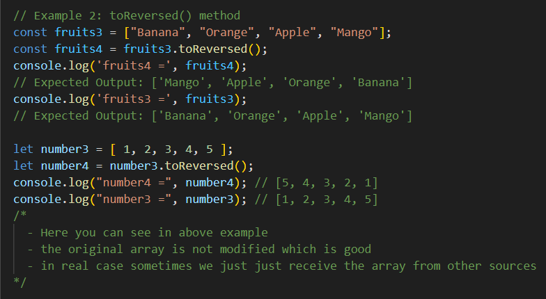
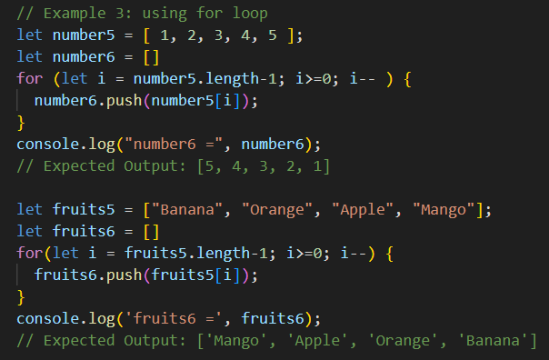
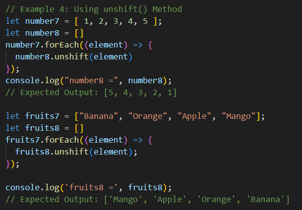
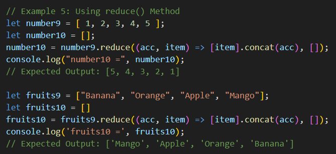
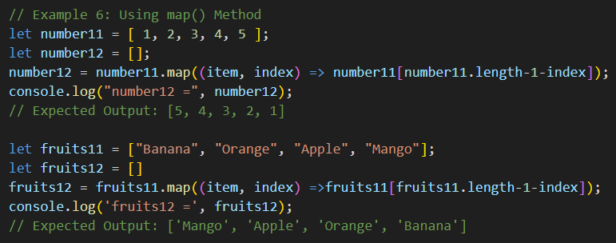

How to reverse an array in JavaScript
(1) Using reverse() - Best and mostly used
The reverse() method reverses the order of the elements in an array.
The main drawback is that - it overwrites the original array, which is not good in real development.

(2) Using toReversed() - New Array is Needed
This is also helps to reverse the array
But the best benefit is that - This will not modify the original array it will keep as it is.

(3) Using for Loop
We use the for loop to reverse an array in JavaScript. First, we will create an empty array and then use the for loop to insert the original array elements in reversed order. This is the traditional approach for handling any loop process

(4) Using unshift() Method
We will create an empty array revArray to store the reversed array elements. First, use the forEach() loop to iterate over each element of the original array and use unshift() method to insert each element at the start of revArray, reversing the order of elements.

(5) Using reduce() Method
We will use the reduce() method on original array and take empty as an accumulator and append each element at the beginning of the array. At the end, we will get the reverse array from the original array.

(6) Using map() Method
The map() method iterates over each element of the original array where index parameter represents the current position of the element. The array[array.length - 1 - index] accesses elements from the end of the array moving towards the beginning.
